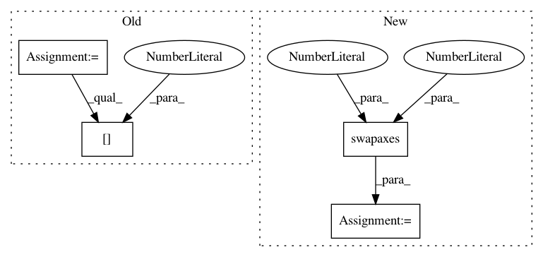

3c874575bf40e8b1fa2280371131a8f29ebb3e98,src/gluonnlp/models/mobilebert.py,MobileBertModel,hybrid_forward,#MobileBertModel#Any#Any#Any#Any#,484
Before Change
embedding = self.get_initial_embedding(F, inputs, token_types)
contextual_embeddings, additional_outputs = self.encoder(embedding, valid_length)
outputs = []
outputs.append(contextual_embeddings)
if self.use_pooler:
pooled_out = self.apply_pooling(contextual_embeddings)
outputs.append(pooled_out)
return tuple(outputs) if len(outputs) > 1 else outputs[0]
def get_initial_embedding(self, F, inputs, token_types=None, trigram_embed=True):
Get the initial token embeddings that considers the token type and positional embeddings
After Change
if self._compute_layout != self._layout:
contextual_embeddings, additional_outputs = self.encoder(F.np.swapaxes(embedding, 0, 1),
valid_length)
contextual_embeddings = F.np.swapaxes(contextual_embeddings, 0, 1)
else:
contextual_embeddings, additional_outputs = self.encoder(embedding, valid_length)
if self.use_pooler:
pooled_out = self.apply_pooling(contextual_embeddings)
In pattern: SUPERPATTERN
Frequency: 3
Non-data size: 4
Instances
Project Name: dmlc/gluon-nlp
Commit Name: 3c874575bf40e8b1fa2280371131a8f29ebb3e98
Time: 2020-07-28
Author: xshiab@connect.ust.hk
File Name: src/gluonnlp/models/mobilebert.py
Class Name: MobileBertModel
Method Name: hybrid_forward
Project Name: brainiak/brainiak
Commit Name: 408f12dec2ff56559a26873a848a09e4c8facfeb
Time: 2019-04-19
Author: sam.nastase@gmail.com
File Name: brainiak/isc.py
Class Name:
Method Name: isc
Project Name: dmlc/gluon-nlp
Commit Name: 3c874575bf40e8b1fa2280371131a8f29ebb3e98
Time: 2020-07-28
Author: xshiab@connect.ust.hk
File Name: src/gluonnlp/models/roberta.py
Class Name: RobertaModel
Method Name: hybrid_forward